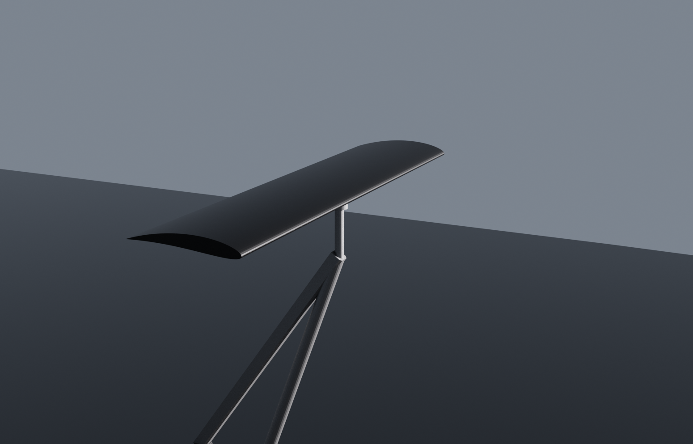
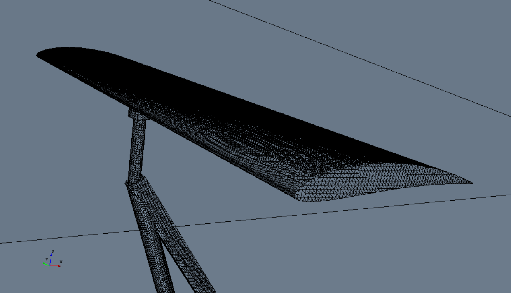
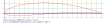
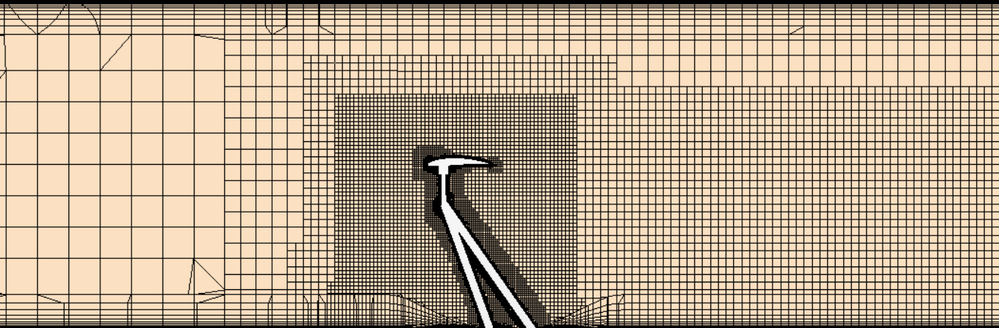
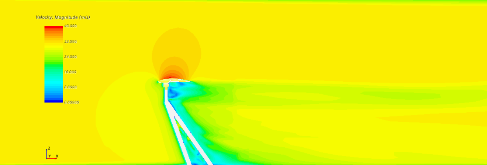
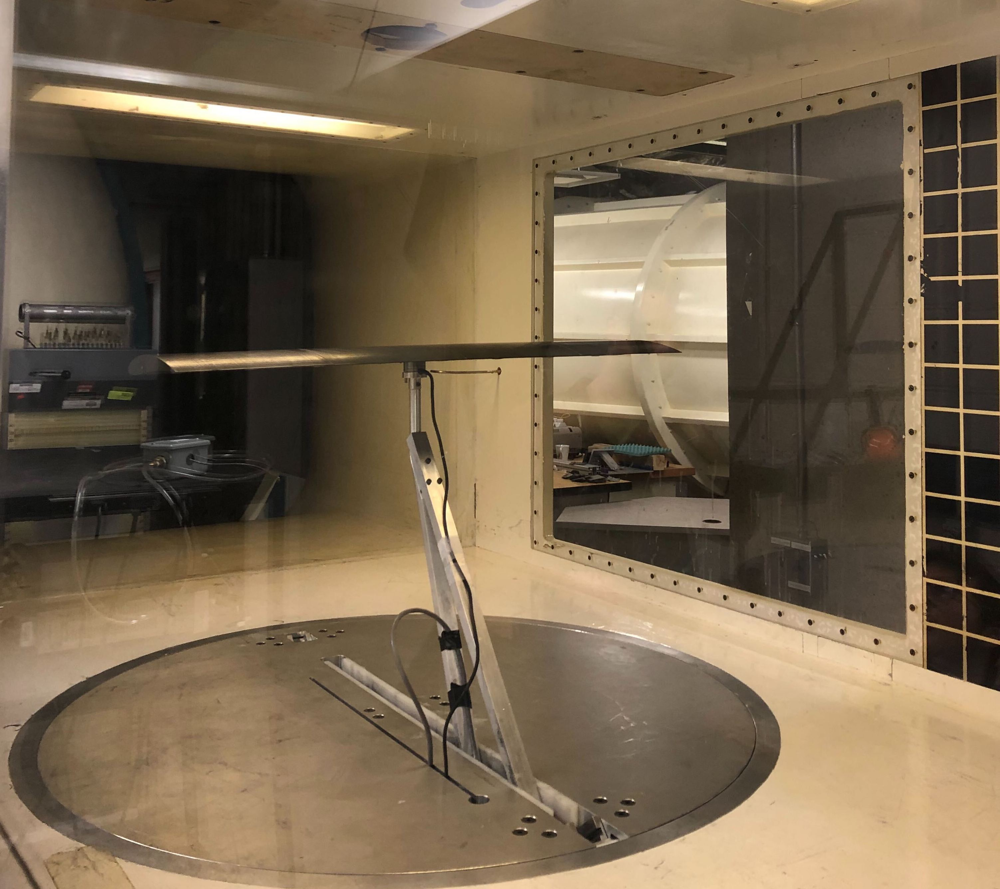

AoA is a project designed to validate aero practices carried out by the Queen's University Formula SAE design team. Understanding limitations in the accuracy of commercial CFD software is an essential consideration when designing a vehicle's aero package as poor aero design can make or break the car.
The choice of a NACA 5512 series airfoil was largely determined by its underlying aesthetic appeal with its profile generated by the NACA 4 digit airfoil generator. The airfoil was extruded into a wing in Catia v5 and combined with a to-scale model of the sting support structure found at the wind tunnel owned by the Royal Military College. The result: a watertight surface compatible for importing within STAR-CCM+.
AoA sweeps under free stream velocities of 20, 25, and 30 m/s over a range of angles from -2 deg to 16 deg were carried out both in simulation and in wind tunnel testing. STAR-CCM+ sims provided the theoretical basis for lift and drag experienced by the airfoil, while load cell readings obtained in the tunnel using a 3D-printed NACA 5512 yielded empirical insight.
Upon comparison of the CFD model and wind tunnel data it was found that simulations faithfully captured lift but had a much more difficult time predicting drag. This is currently being investigated.